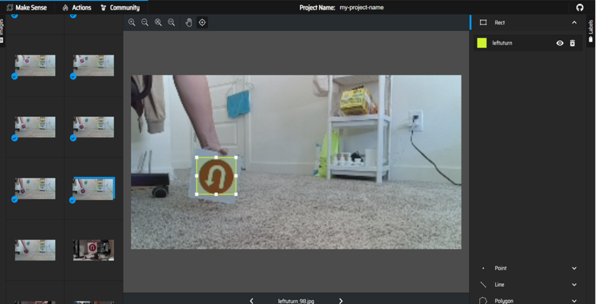

Webcam Controlled Rover
Drawing Robot

NUMPY
This page consists of some of the most frquently used numpy functions for quick reference
1. numpy.array()
Given a python list or any array like object, this function coverts the object to a numpy array
import numpy as np
a = [2,3,4,5,6]
np.array(object=a)Some useful arguments :
> dtype - sets a data type to the numpy array (datatypes are listed on numpy documentation).
> copy - a boolean, if set True will copy the object
(Note : if you don't use copy and simply assign the array to a variable, then any changes in the variable will change the array)
2. numpy.ndarray.tolist()
Given a numpy array , this function coverts the array to a python list
import numpy as np
a = np.array([2,3,4,5,6])
b = a.tolist()3. numpy.zeros()
Given the shape of the array in tuple , this function generates a numpy array made of zeros
import numpy as np
a = np.zeros(shape=(2,3))Some useful arguments :
> dtype - sets a data type to the numpy array (datatypes are listed on numpy documentation).
4. numpy.ones()
Given the shape of the array in tuple , this function generates a numpy array made of ones
import numpy as np
a = np.ones(shape=(2,3))Some useful arguments :
> dtype - sets a data type to the numpy array (datatypes are listed on numpy documentation).
5. numpy.linspace()
Given a starting, ending number and number of elements, this function generates a numpy array under the conditons
import numpy as np
a = np.linspace(start=2,stop=10,num=20) #default value for num is 50Some useful arguments :
> dtype - sets a data type to the numpy array (datatypes are listed on numpy documentation).
> endpoint - a boolean, if True then stop is last sample, default is True
6. numpy.random.rand()
Given the shape of array as arguments, this function generates a numpy array of random values
import numpy as np
a = np.random.rand(d0=2,d1=3)7. numpy.random.randn()
Given the shape of array as arguments, this function generates a array of numbers from a standard normal distribution. It is a normal Gaussian distribution with mean 0 and variance 1.
import numpy as np
a = np.random.randn(d0=2,d1=3)8. numpy.random.randint()
Given a low value, high value and shape , this function generates a array of numbers between the low and high values with the given shape.
import numpy as np
a = np.random.randint(low=2,high=20,size=(5,9))Some useful arguments :
> dtype - sets a data type to the numpy array (datatypes are listed on numpy documentation).
(Note : high is optional, but it makes more sense to give it a high value)
9. numpy.random.uniform()
Given a low value, high value and shape , this function generates a array of numbers between the low and high values with the given shape from a uniform distribution.
import numpy as np
a = np.random.randint(low=-1,high=0,size=(5,9))(Note : high is not included )
10. numpy.eye()
Given a number or a shape, this function generates a two dimensional array of the given shape that represents an identity matrix.
import numpy as np
a = np.eye(N=5)Some useful arguments :
> M - default is None, can be used to set the number of columns.
11. numpy.random.seed()
A random number can be given as argument to the function, which generates a seed. The seed is used to reproduce the same random values
import numpy as np
np.random.seed(seed=50)
np.random.rand(6)12. numpy.arange()
Given start, stop and step, this function generates numbers bewteen start and stop with equal step interval
import numpy as np
np.arange(start=10,stop=50,step=10)Some useful arguments :
> dtype - sets a data type to the numpy array (datatypes are listed on numpy documentation).
13. numpy.reshape(),numpy.ndarray.reshape()
Given an array and int or shape in tuple, this funtion resizes the array. Can also be used with an array object
import numpy as np
a = np.ones((1,7))
np.reshape(a,shape=(7,1))
a.reshape(7,1)14. numpy.shape(),numpy.ndarray.shape()
Given an array as argument or with an array object to returns the shape of the numpy array
import numpy as np
a = np.zeros((10,5))
np.shape(a)
a.shape15. numpy.ndarray.max()
Used with an array object to return the largest number in the numpy array
import numpy as np
a = np.array([2,3,4,5,6])
a.max()Some useful arguments :
> axis - can set a particular axis to find the largest
16. numpy.ndarray.argmax()
Used with an array object to return the index of the largest number in the numpy array
import numpy as np
a = np.array([2,3,4,5,6])
a.argmax()Some useful arguments :
> axis - can set a particular axis to find the largest
17. numpy.ndarray.min()
Used with an array object to return the smallest number in the numpy array
import numpy as np
a = np.array([2,3,4,5,6])
a.min()Some useful arguments :
> axis - can set a particular axis to find the largest
18. numpy.ndarray.argmin()
Used with an array object to return the index of the smallest number in the numpy array
import numpy as np
a = np.array([2,3,4,5,6])
a.argmin()Some useful arguments :
> axis - can set a particular axis to find the largest
PANDAS
This page contains some of the most frequently used pandas functions for quick reference
1. pandas.Series()
Given an array (can be list,dictionary, np.ndarray etc), this function generates a pandas Series of the array
import pandas as pd
import pandas as pd
a = [2,3,5,6,7]
b = pd.Series(data=a)> index - pass a list to set index for the elements
2. pandas.DataFrame()
Given an array (can be list,dictionary, np.ndarray etc), this function generates a pandas DataFrame of the array
import pandas as pd
import pandas as pd
a = [2,3,5,6,7]
index=["a","b","c","d","e"]
columns=["A","B","C","D","E"]
b = pd.DataFrame(data=a,index=index,columns=columns)(Note : index and columns are optional)
3. pandas.DataFrame.drop()
Used with the DataFrame object to drop a row or a column from the Dataframe
import pandas as pd
import pandas as pd
a = [2,3,5,6,7]
b = [7,8,9,10,11]
cols = ['a','b','c','d','e']
df = pd.DataFrame(data=[a,b],columns=cols)
df.drop('a') # drops the column 'a'Some useful arguments :
> axis - drops the columns of a DataFrame
4. pandas.DataFrame.loc()
Used with the DataFrame object to index a row using the index elements of the Dataframe.Input can also be an array
import pandas as pd
import pandas as pd
a = [2,3,5,6,7]
b = [7,8,9,10,11]
index=['a','b']
df= pd.Series(data=a,index=index)
df.iloc('a')5. pandas.DataFrame.iloc()
Used with the DataFrame object to index a row using integers from the Dataframe.Input can also be an array
import pandas as pd
import pandas as pd
a = [2,3,5,6,7]
b = [7,8,9,10,11]
index=['a','b']
df= pd.Series(data=a,index=index)
df.iloc('a')6. pandas.DataFrame.describe()
Used with the DataFrame object to describes the data in the dataframe. The output is a dataframe with count,mean,standard deviation,min,max etc of the data in the dataframe
import pandas as pd
import pandas as pd
a = [2,3,5,6,7]
b = [7,8,9,10,11]
index=['a','b']
df= pd.Series(data=a,index=index)
df.describe()7. pandas.DataFrame.dtypes()
Used with a DataFrame object, outputs a pandas Series of the list of datatypes used in the dataframe
import pandas as pd
import pandas as pd
a = [2,3,5,6,7]
b = [7,8,9,10,11]
index=['a','b']
df= pd.Series(data=a,index=index)
df.dtypes8. pandas.DataFrame.info()
Used with DataFrame object to obtain some information about the dataframe
import pandas as pd
import pandas as pd
a = [2,3,5,6,7]
b = [7,8,9,10,11]
index=['a','b']
df= pd.Series(data=a,index=index)
df.info()9. pandas.DataFrame.dropna()
Used with DataFrame object to drop the missing data. Drops entire rows with atleast one missing value
import pandas as pd
import pandas as pd
df = pd.DataFrame({'A':[1,2,np.nan,4],'B':[5,np.nan,np.nan,8],'C':[10,20,30,40]})
df.dropna()Some useful arguments :
> axis - drops the columns of a DataFrame with missing data
10. pandas.DataFrame.fillna()
Used with DataFrame object to fill the missing data. Fills the missing data of the entire DataFrame
import pandas as pd
import pandas as pd
df = pd.DataFrame({'A':[1,2,np.nan,4],'B':[5,np.nan,np.nan,8],'C':[10,20,30,40]})
df.fillna(value=0)11. pandas.DataFrame.head()
Used with DataFrame object to show the top rows of the dataframe
import pandas as pd
import pandas as pd
df = pd.DataFrame({'A':[1,2,3,4],'B':[5,6,7,8],'C':[10,20,30,40]})
df.head()(Note : The default value for N is 5)
12. pandas.DataFrame.tail()
Used with DataFrame object to show the bottom rows of the dataframe
import pandas as pd
import pandas as pd
df = pd.DataFrame({'A':[1,2,3,4],'B':[5,6,7,8],'C':[10,20,30,40]})
df.tail()(Note : The default value for N is 5)
13. pandas.DataFrame.groupby()
Used with DataFrame object to filter out the dataframe. The group by function , must always be used with an aggregation function like mean(),count(),sum() etc
Refer this website for aggregation functions
import pandas as pd
import pandas as pd
df = pd.DataFrame({'A':[1,2,3,4],'B':[5,6,7,8],'C':[10,20,30,40]})
df.tail()(Note : The default value for N is 5)
VISUALIZATION
MATPLOTLIB
Some of the basics of matplot lib for reference
1. Plotting a simple sine wave using legends, title and other functions
import matplotlib.pyplot as plt
import numpy as np
a = np.arange(0.0, 2.0, 0.01)
s = 1 + np.sin(2 * np.pi * t)
fig, ax = plt.subplots()
ax.plot(t, s, color='r')
ax.set(xlabel='time (s)', ylabel='voltage (mV)',title='Sine wave')
ax.grid()
fig.savefig("sine_wave.png")
plt.show()
Output :

2. Plotting data using matplotlib interactive plot
The interactive plot is very useful when plotting real time data. The following is an example of interactive plot
A random number is generated and plotted against time. Although this is not real time data this gives an idea how the plot works in real time
Import the necessary modules
import numpy as np
import matplotlib.pyplot as plt
import datetimeIntialize time, pyplot figure, subplot and turn on the interactive mode using plt.ion()
Intiazlize arrays to store time and data
t0 = datetime.datetime.now()
fig = plt.figure()
ax = plt.subplot(111)
plt.ion()
data=list()
time_diff = list()
Use ax.cla() to clear any previous plots, calculate time difference, generate a random number and plot the data
Note: plt.pause(0.05) is necessary for the interactive plot to run
Plot for 10 seconds and break out of the loop
while True:
ax.cla()
t1 = datetime.datetime.now()
diff = t1-t0
time_diff.append(diff.total_seconds())
data.append(np.random.rand())
ax.plot(time_diff,data,marker='o')
plt.show()
plt.pause(0.05)
if diff.total_seconds() > 10:
break
Output:
YOLOv5
YOLO is a popular object detection and classification algorithm. It is very fast and efficient in detecting and classifying objects
This sections shows the implementation of YOLO in pytorch. YOLO is developed using pytorch and hence it is easier to implement the algorithm in pytorch rather than tensorflow and keras
There are different versions of YOLO and we will be using yolov5 (yolo version 5). There are also different versions of yolov5 as shown in the image

1. Creating a dataset
You can use popular datasets like coco, cifar10 or download dataset from the internet or create your own dataset
We have created our own dataset, with images captured from a turtlebot4 oak-d cameara. The dataset consists of 1800 images for training and 200 images for validation, equally distributed among the 10 classes of traffic signs namely

The shape of the images are 300 by 150 pixels
The images must be labelled manually for the yolo algorithm. We can use the makesense website to draw bounding boxes for each images and label them.
Inside the makesense site, click "GetStarted" and upload your images. Create labels as shown in the image.

Draw the bounding boxes for the images and label them.

Click on actions, export annotations and download the labels as zip files in yolo format
Add the labels to the dataset folder under labels. The dataset folder must be of a certain format for yolov5 to use the dataset.The format is as follows

The label is a text file that contains the class of the image (0,1,2,....) followed by the pixel values of the bounding box enclosing the feature on the image.

2. Training the model
Download the required files for training yolov5 from the github repository.Repo Link
To train the model we need to point our dataset to yolov5. To do this you need to create a yaml file under yolov5/data and add the following (you can also edit one of the yaml files under the data folder)
# Train/val/test sets as 1) dir: path/to/imgs, 2) file: path/to/imgs.txt, or 3) list: [path/to/imgs1, path/to/imgs2, ..]
path: your_path/fullDataset # dataset root dir
train: images/train/ # train images (relative to 'path') 118287 images
val: images/val/ # val images (relative to 'path') 5000 images
# Classes
names:
0: bump
1: left_Uturn
2: right_Uturn
3: speed_10
4: speed_20
5: speed_30
6: stop
7: straight
8: left_turn
9: right_turn
Add your path to the dataset and edit the number of classes as per your requirement.
Before starting the training let us look at the hyperparameters we will be using.
By default yolo has its own hyperparameters under "data/hyp.scratch.yaml".
We can also use other hyperpameter files under "data/hyps". We will be using "hyp.scratch-low.yaml", as the name
suggests it does minor modifications (scratches), operations like flip the image up, flip the image left,mosaic,shear, scale etc on the images we train. We can also set the learning rate,
momentum,weight decay etc on the hyperpameter file.
Here is the hyperpameter file that I used
# YOLOv5 🚀 by Ultralytics, AGPL-3.0 license
# Hyperparameters for low-augmentation COCO training from scratch
# python train.py --batch 64 --cfg yolov5n6.yaml --weights '' --data coco.yaml --img 640 --epochs 300 --linear
# See tutorials for hyperparameter evolution https://github.com/ultralytics/yolov5#tutorials
lr0: 0.01 # initial learning rate (SGD=1E-2, Adam=1E-3)
lrf: 0.01 # final OneCycleLR learning rate (lr0 * lrf)
momentum: 0.937 # SGD momentum/Adam beta1
weight_decay: 0.0005 # optimizer weight decay 5e-4
warmup_epochs: 3.0 # warmup epochs (fractions ok)
warmup_momentum: 0.8 # warmup initial momentum
warmup_bias_lr: 0.1 # warmup initial bias lr
box: 0.05 # box loss gain
cls: 0.5 # cls loss gain
cls_pw: 1.0 # cls BCELoss positive_weight
obj: 1.0 # obj loss gain (scale with pixels)
obj_pw: 1.0 # obj BCELoss positive_weight
iou_t: 0.20 # IoU training threshold
anchor_t: 4.0 # anchor-multiple threshold
# anchors: 3 # anchors per output layer (0 to ignore)
fl_gamma: 0.0 # focal loss gamma (efficientDet default gamma=1.5)
hsv_h: 0.015 # image HSV-Hue augmentation (fraction)
hsv_s: 0.7 # image HSV-Saturation augmentation (fraction)
hsv_v: 0.4 # image HSV-Value augmentation (fraction)
degrees: 0.0 # image rotation (+/- deg)
translate: 0.1 # image translation (+/- fraction)
scale: 0.5 # image scale (+/- gain)
shear: 0.0 # image shear (+/- deg)
perspective: 0.0 # image perspective (+/- fraction), range 0-0.001
flipud: 0.0 # image flip up-down (probability)
fliplr: 0.0 # image flip left-right (probability)
mosaic: 1.0 # image mosaic (probability)
mixup: 0.0 # image mixup (probability)
copy_paste: 0.0 # segment copy-paste (probability)
Note that I have given the probability for "flipud" and "fliplr" as 0.0, this is because flipping the images changes the meaning of the feature. For example , a
right turn image will be trained as a left turn image, this confuses the model and makes the model ambiguous and unable to differentiate between the features.
Depending on your
application you are free to chose whatever parameters you want, but be careful not to run into such mistakes.
Now we are officially read to train our model.
To train the model we need to run the train.py file under the yolov5 folder, followed by image size, batch size, epochs, the name of yaml file we just created along with the hyperpameter file name as command line arguments .
python train.py --img 320 --batch 16 --epochs 60 --data custom_data.yaml --weights yolov5s.pt --cache --hyp hyp.scratch-low.yamlThe model is trained and will be stored as a folder under "runs". The folder will contains the weights, results, metrics such as precison, recall, loss curves etc. There are also some images of training batches, labelled images and model predictions from the validation set.
Labelled Images